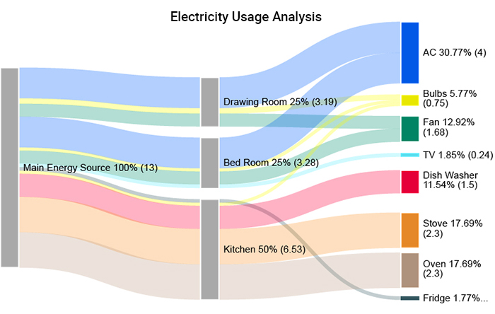
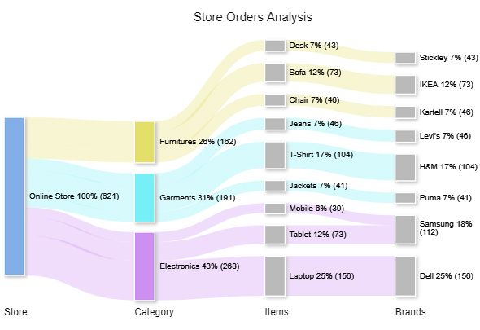
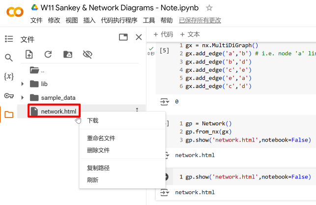
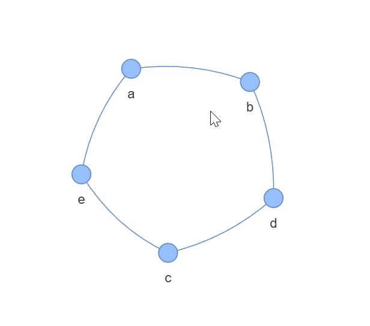
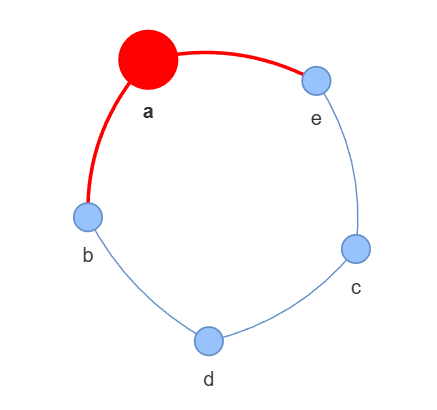
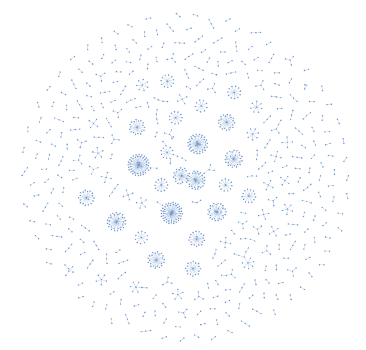
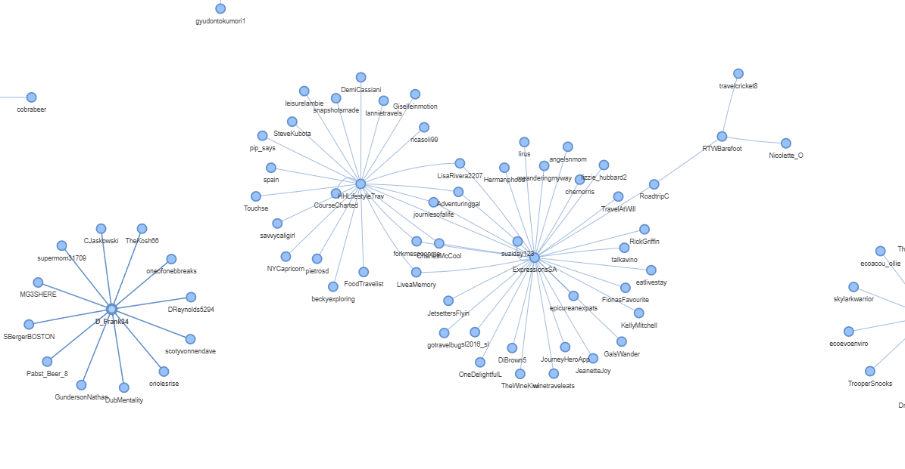

# 通过低级接口接入 plotly 库，命名为 go
import plotly.graph_objects as go桑基图与网络图
Python
Plotly
可视化
桑基图
网络图
本章介绍桑基图与网络图的绘制方法，包括数据准备、图表创建和样式调整等。
1 桑基图
1.1 什么是桑基图
桑基图（Sankey diagram） 是一种特定类型的流程图，分支宽度对应数据流量大小，用于展示能量、金钱或材料的转移。因 1898 年 Matthew Henry Phineas Riall Sankey 绘制的”蒸汽机的能源效率图”而得名 (百度百科)。
桑基图由节点 (node) 和链接 (link) 构成。节点代表流程中的阶段或实体；链接表示节点间的资源流动，通常是有向的，从源节点（source node）指向目标节点（target node）。链接的宽度代表流量大小，颜色可区分不同阶段或类别。起始与结束流量守恒，各阶段分支宽度之和相等。
例 1： 下图 图 1 展示了打工人月度开销的流向，从”总费用”节点流向各具体项目节点。

例 2： 下图 图 2 展示了家中电能的流向：最左侧为总电能，中间为各房间，右侧为各电器；链接宽度代表流量，颜色区分电器类型。

例 3： 下图 图 3 展示了购物网站订单分类：从总订单出发，按产品大类、细分类、品牌逐级展开；链接宽度代表订单数量，颜色区分商品大类。

1.2 Plotly Graph Object
此前学习使用了 plotly.express——Plotly 的高级接口，可通过简洁函数绘制基础图表。绘制桑基图需要使用更底层的接口 plotly.graph_objects。
低级接口（Low-Level Interface）：提供基本函数，直接操作底层数据，需要编写较多代码。
高级接口（High-Level Interface）：提供高度整合的函数，使用方便但灵活性较低。
例如，matplotlib.pyplot是 Matplotlib 的高级接口（plt.hist()），而引入底层的matplotlib模块才能访问mpl.axes.Axes()等函数。
1.3 函数和类
我们将使用 go.Sankey() 储存桑基图信息，再用 go.Figure() 将其绘制出来。严格来说，go.Sankey() 是一个类（class） 的 构造函数 (constructor)，调用它会创建一个储存桑基图数据的对象；go.Figure() 同理。
Python 中常用术语的对应关系见 表 1：
pd、go 是库接口，df 是具体对象）
| 概念 | 关联概念 | 示例 |
|---|---|---|
| 函数 (function) | 参数 (parameter) | pd.read_csv(encoding='utf-8') |
| 对象 (object) | 方法 (method) | df.sample(size=10) |
| 类 (class) | 属性 (property) | go.Sankey(node=..., link=...) |
| 对象 (object) | 属性 (attribute) | df.columns |
1.4 字典
字典 (dict) 是 Python 中以 键值对 (key-value) 形式存储数据的数据结构，有三种常见的创建方式：
# 方法1
d1 = {'a': 1, 'b': 2, 'c': 3} # key 必须加引号
# 方法2
d2 = dict(a=1, b=2, c=3) # 无需加引号
# 方法3
keys = ['a', 'b', 'c'] # 分别定义 key 和 value
values = [1, 2, 3]
d3 = dict(zip(keys, values)) # 用 zip() 打包, 再用 dict() 转换成字典
print(d1)
print(d2)
print(d3){'a': 1, 'b': 2, 'c': 3}
{'a': 1, 'b': 2, 'c': 3}
{'a': 1, 'b': 2, 'c': 3}列表与字典的主要区别：
- 列表有序，元素可重复，按位置 (index，从 0 开始) 查找元素。
- 字典无序，关键字不可重复 (值可以重复)，按关键字查找值。
# 例: 动物与叫声
animal_with_sound = {'猫': '喵喵喵', '狗': '汪汪汪', '鸭': '嘎嘎嘎'}
sound = ['喵喵喵', '汪汪汪', '嘎嘎嘎']# 列表: 按位置序号(索引)查找元素
sound[0]'喵喵喵'# 字典：按关键字查找值 (注: 字典无序, 不能用索引查找)
animal_with_sound['猫']'喵喵喵'1.5 绘制桑基图
参考资料：
1.5.1 构建桑基图对象
第一步: 用 go.Sankey() 创建桑基图对象。节点命名中 A/B/C 代表三个阶段，数字代表同一阶段内的不同节点。
# go.Sankey() 函数的参数配置
sankey_data = go.Sankey( # 定义 sankey_data 变量
##########################################################################
# 节点 (node)
node = dict(
# 节点标签
label = ['A1','A2','B1','B2','C1','C2'],
# 节点颜色: 和节点标签一一对应
color = [
'yellow', 'yellow', 'tomato', 'tomato',
'cornflowerblue', 'cornflowerblue',
],
# 节点间距 (padding) 和粗细 (单位: px)
pad = 30,
thickness = 20,
# 节点外框线
line = dict(
color = 'black', # 外框线颜色
width = 5, # 外框线宽度 (单位: px)
)
),
##########################################################################
# 链接 (link)
link = dict(
# 源节点: 节点标签 (label) 列表中对应的索引
source = [0, 1, 0, 2, 3, 3],
# 目标节点: 节点标签 (label) 列表中对应的索引
target = [2, 3, 3, 4, 4, 5],
# 链接流量大小: 与源节点和目标节点列表对应
value = [8, 4, 2, 8, 4, 2],
# 链接颜色: 和上面对应
color = [
'sandybrown', 'sandybrown', 'sandybrown',
'thistle', 'thistle', 'thistle',
],
# 链接箭头长度: 从源节点指向目标节点 (默认为0, 即没有箭头)
arrowlen = 15
)
)
##############################################################################
# 查看 sankey_data 的数据类型
print('数据类型:\n', type(sankey_data),'\n')
# 查看 sankey_data 的内容
print('内容:\n', sankey_data)数据类型:
<class 'plotly.graph_objs._sankey.Sankey'>
内容:
Sankey({
'link': {'arrowlen': 15,
'color': [sandybrown, sandybrown, sandybrown, thistle, thistle,
thistle],
'source': [0, 1, 0, 2, 3, 3],
'target': [2, 3, 3, 4, 4, 5],
'value': [8, 4, 2, 8, 4, 2]},
'node': {'color': [yellow, yellow, tomato, tomato, cornflowerblue,
cornflowerblue],
'label': [A1, A2, B1, B2, C1, C2],
'line': {'color': 'black', 'width': 5},
'pad': 30,
'thickness': 20}
})从输出结果可见, sankey_data 是一个 Plotly Sankey 对象，参数以字典形式多重嵌套储存。
构建 Sankey 对象时需要注意的是, 源节点和目标节点列表中的值是节点标签列表中对应节点的索引 (index), 而非节点名称本身。比如, source = [0, 1, 0, 2, 3, 3] 中的 0 代表第一个节点 ‘A1’，1 代表第二个节点 ‘A2’，以此类推。因此, 在构建数据时需要确保索引与节点标签列表中的顺序一致，否则会导致链接指向错误的节点。
1.5.2 绘制图像
第二步： 用 go.Figure() 绘制图像：
# 绘制图像
fig = go.Figure(sankey_data)
# 更新布局
fig.update_layout(
height=400,
title_text='示例桑基图',
title_x=0.5, title_y=0.95, # 标题位置
margin=dict(
l=60, r=60, t=60, b=20,
),
font={'style': 'italic'},
)
# 展示图像
# fig.show(renderer='notebook') # if use VS Code or Jupyter, use this line
fig.show()如 图 4 所示, A/B/C 代表三个阶段, 数字代表同一阶段内的不同节点。链接宽度代表流量大小, 颜色区分不同阶段或类别。
1.5.3 预定义变量
随着节点增加，索引管理变得困难。为此，可以定义字典来实现 通过节点名称查找对应索引 ，以便更直观地构建数据:
# 定义列表变量储存节点名称
node_names = ['A1', 'A2', 'B1', 'B2', 'C1', 'C2']
# 通过 range(len()) 生成与节点对应的索引列表
node_ids = range(len(node_names))
# 构建 名称-索引 字典
nodes = dict(zip(node_names, node_ids))nodes['B2'] # 通过节点名称查找对应索引3这样就可以通过名称来查找 源节点 和 目标节点 在 节点标签列表 中的索引。
与此同时，对于很长的参数，可以 先定义变量再填入函数，使代码更清晰、易维护。以下代码重绘与上文 图 4 所示相同的桑基图：
##############################################################################
# 节点 (node) 参数所需值
# 定义节点颜色
node_colors = [
'yellow', 'yellow', 'tomato', 'tomato',
'cornflowerblue', 'cornflowerblue',
]
# 定义整个节点 (node) 参数
node_definition = dict(
pad=15,
thickness=20,
line=dict(color='black', width=5),
label=node_names, # 使用上文创建的节点名称变量
color=node_colors, # 使用刚刚定义的节点颜色变量
)
##############################################################################
# 链接 (link) 参数所需值
# 通过节点名称查找索引来定义源节点和目标节点
sources = [
nodes['A1'], nodes['A1'], nodes['A2'],
nodes['B1'], nodes['B2'], nodes['B2'],
]
targets = [
nodes['B1'], nodes['B2'], nodes['B2'],
nodes['C1'], nodes['C1'], nodes['C2'],
]
# 定义链接流量大小和颜色
values = [8, 4, 2, 8, 4, 2]
link_colors = [
'sandybrown', 'sandybrown', 'sandybrown',
'thistle', 'thistle', 'thistle',
]
# 定义整个链接 (link) 参数
link_definition = dict(
source=sources,
target=targets,
value=values,
color=link_colors,
arrowlen=15,
)
##############################################################################
# 绘制桑基图
# 把之前定义的 node_definition 和 link_definition 直接填入函数
fig = go.Figure(
go.Sankey(
node = node_definition,
link = link_definition,
)
)
# 更新布局
fig.update_layout(
height=400,
title_text='示例桑基图 - 重绘版',
title_x=0.5, title_y=0.95,
margin=dict(
l=60, r=60, t=60, b=20,
),
font={'style': 'italic'},
)
fig.show() # 展示图表重绘结果与原图相同。但将数据定义为变量后，修改数据时只需调整变量值，让代码更清晰，便于维护。
1.5.4 修改颜色透明度
修改链接颜色的透明度，可以使用 RGBA 值代替颜色名称字符串。RGBA 格式为 (red, green, blue, alpha)，其中 alpha 表示不透明度（0 完全透明，1 完全不透明）。"sandybrown" 和 "thistle" 均为 CSS 预设颜色名称，可通过 w3schools CSS Colors 或 Matplotlib 颜色表 查阅。
# 引入库用于处理 RGBA 值
import matplotlib.colors as c# 使用 c.to_rgba() 查找颜色 RGB 值并设置 alpha 值
c.to_rgba('sandybrown', 0.5)(0.9568627450980393, 0.6431372549019608, 0.3764705882352941, 0.5)Plotly 支持使用 'rgba(r, g, b, a)' 格式的字符串来指定 RGBA 格式的颜色。
# 定义字符串储存透明色的 RGBA 值
faint_sandybrown = 'rgba' + str(c.to_rgba('sandybrown', 0.5)) # 加号用于连接字符串
faint_thistle = 'rgba' + str(c.to_rgba('thistle', 0.5))
# 查看字符串
print(faint_sandybrown)
print(faint_thistle)rgba(0.9568627450980393, 0.6431372549019608, 0.3764705882352941, 0.5)
rgba(0.8470588235294118, 0.7490196078431373, 0.8470588235294118, 0.5)# 重新定义链接颜色
link_colors = [
faint_sandybrown, faint_sandybrown, faint_sandybrown,
faint_thistle, faint_thistle, faint_thistle,
]
# 更新图表
fig.update_traces(link_color=link_colors)
fig.update_layout(
height=400,
title_text='示例桑基图 - 链接透明度 50% 版',
title_x=0.5, title_y=0.95,
margin=dict(
l=60, r=60, t=60, b=20,
),
font={'style': 'italic'},
)
fig.show()2 网络图
2.1 网络图和桑基图的异同
桑基图和网络图均用于可视化关系数据，但侧重点不同，详见 表 2：
| 特征 | 桑基图 | 网络图 |
|---|---|---|
| 主要用途 | 展示资源流动量 | 展示节点间连接关系 |
| 节点含义 | 流程阶段或实体 | 个体（如某一用户） |
| 连接名称 | 链接 (link) | 边 (edge) |
| 连接方向 | 有向（源→目标） | 可有向或无向 |
| 连接宽度 | 代表流量大小 | 无宽度区分 |
| 关键特征 | 层级化、流量守恒 | 连接强度与关系距离 |
| 应用示例 | 能量分布、成本分配 | 社交网络、计算机网络 |
2.2 绘制网络图
使用 pyvis 前需先安装（含 networkx）。
pip install pyvis本地环境（Jupyter）安装后可复用；Google Colab 的虚拟环境仅对当前文件有效，新建文件需重新安装。
# 引入库用于绘制网络图
from pyvis.network import Network
import networkx as nx第一步：用 networkx 创建网络关系
# 创建一个 边无向 的 空网格关系对象
gx = nx.Graph()
# 注: 也可用 nx.MultiDiGraph() 创建有向空网络# 在空网络 gx 里添加节点和边
gx.add_edge('a', 'b') # 从 'a' 指向 'b' 的边
gx.add_edge('b', 'd')
gx.add_edge('c', 'e')
gx.add_edge('e', 'a')
gx.add_edge('c', 'd')第二步：用 pyvis 输出可交互网络图
# 创建空的可交互网络图对象
gp = Network()
# 从 gx 里读取网络关系
gp.from_nx(gx)
# 输出为单独的 html 文件
gp.show('net.html', notebook=False)
# notebook=False let the fig not be rendered in Jupyter output cell
# only use True when you are using Jupyter & browser输出的的独立 HTML 文件会保存在当前目录下 (查看源码和文件)。在 Colab 中可在左侧文件栏看到，如 图 7 所示。下载后用浏览器打开，效果见 图 8。


print(gp.nodes[0]) # 查看第一个节点（index 为 0）的信息{'color': '#97c2fc', 'size': 10, 'id': 'a', 'label': 'a', 'shape': 'dot'}手动修改节点属性:
# 修改节点属性
gp.nodes[0]['color'] = 'red' # 颜色
gp.nodes[0]['size'] = 20 # 大小
# 修改后的文件重新命名，避免覆盖原文件
gp.show('net-modified.html', notebook=False)修改后效果见 图 9：

2.3 从文件中读取网络关系
除手动创建外，也可从 CSV 文件读取网络关系数据。以下示例使用 beer and curry 推文数据 (查看源文件): 原贴主艾特了其他用户，构成从原贴主 (源节点) 指向被艾特用户 (目标节点) 的有向边。
###############################################################################
# 数据预处理
# 引入 pandas 库来处理 csv 文件
import pandas as pd
# 读取 csv 文件
path = '../../../src/data/beer-and-curry.csv'
df = pd.read_csv(path)
# 去除无艾特的行
df.dropna(subset='mentions', inplace=True)
###############################################################################
# 创建网络关系
# 创建有向空网络
gx1 = nx.MultiDiGraph()
# 定义循环, 遍历所有节点
for i in df.index:
user = df.loc[i, 'user'] # 获取用户作为源节点
mentions = df.loc[i, 'mentions'] # 获取一篇帖子里的所有艾特对象
mentions = mentions.replace(' ', '') # 移除空格
mentions = mentions.split('@') # 按 '@' 分隔不同艾特对象
mentions.pop(0) # 分隔后首个元素为空字符, 去除
for mention in mentions:
gx1.add_edge(user, mention) # 添加所有节点和边
###############################################################################
# 绘制网络图
gp1 = Network() # 新建一个空网络图
gp1.from_nx(gx1) # 存入把网络关系
gp1.show('net-from-csv.html', notebook=False) # 输出 html 文件输出的网络图较复杂，渲染需 1～2 分钟，请勿在此期间关闭浏览器。整体预览见 图 10，细节见 图 11。


网络图可用于研究社交网络，发现强/弱连接与高影响力用户，以及分析潜在的信息茧房 (information cocoon) 或 echo chamber 现象。